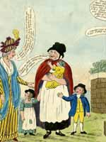
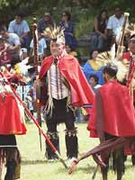

Join a child as a Young Friend and open up the wonders of the British Museum for them. Membership of the Young Friends is a great way for children to get closer to the Museum and learn more about its wonderful collections. Membership is open to children from the ages of 8-15, and for just £20 a year allows a child the following benefits:
- ReMUS, the magazine of the Young Friends, delivered three times a year. ReMUS contains articles about all the Museum’s latest exhibitions and collections, interviews with curators, and information about all the upcoming Young Friends events, including sleepovers.
- Free entry to four Special Family Evenings, featuring talks, craft activities, storytelling and much more.
- Free entry to all British Museum exhibitions.
Events for Young Friends run throughout the year, particularly during half-terms and holidays. The most popular of all these are the sleepovers. Young Friends arrive in the early evening and enjoy a range of activities including talks by curators, craft activities, storytelling and lots more, all themed around the Museum’s collections and current exhibitions. They then get into their sleeping bags and spent the night in the Museum’s galleries, surrounded by giant ancient sculptures and statues.
There are currently four sleepovers a year, and it is important to book early as these get very popular. There are also other exciting events run, such as behind-the-scenes visits with Museum curators, drama workshops, visits to other museums, and more besides.
Upcoming Young Friends events include:
21 November 2005
Here Comes Christmas family evening
close
|
 |